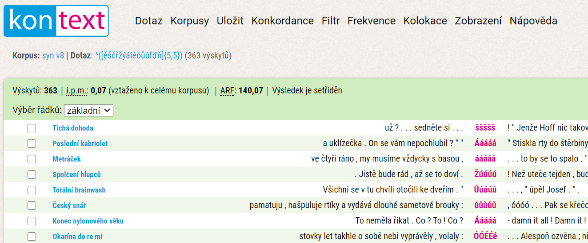
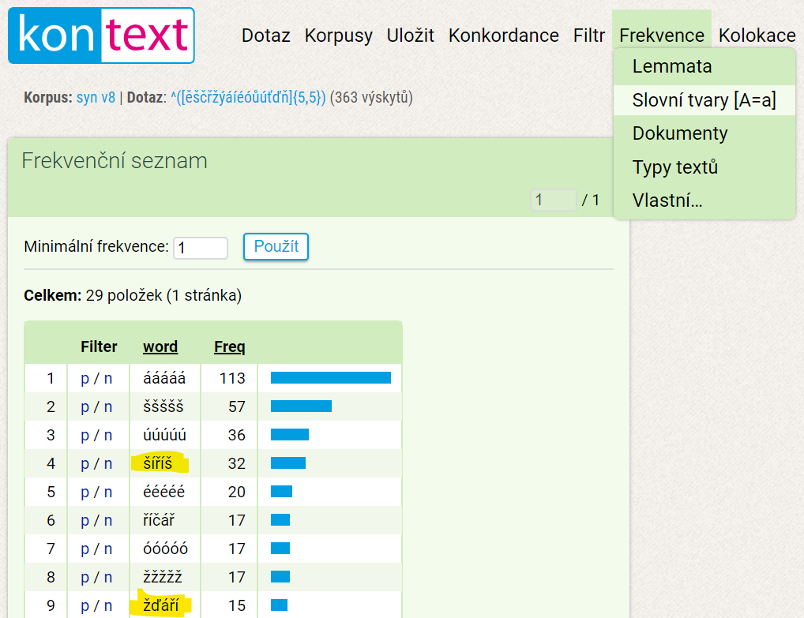

Čeština je charakteristická i tím, že nad písmeny se občas objeví háček či čárka. Napadlo mě najít to nejdelší slovo, které obsahuje pouze písmena s diakritikou.
Číší šíříš
Bádání jsem započal přemítáním a nalezením slova číší. Čtyři písmena mají i další slova: říší, šíří. Tvar slovesa šířit v druhé osobě přítomného času a jednotného čísla přidá k řešení další písmeno. Šíříš s pěti znaky je nejdelší slovo, na které jsem přišel pomyšlením. Na pokračování jsem přizval technologie.
Hledání (v) seznamu slov
V první fázi to byla snaha získat seznam všech českých slov ve všech možných tvarech. Nyní můžu prozradit, že kompletní seznam neexistuje. Není ani jasné, kolik takových slov je (hovoří se o několik milionech). Nejblíže jsem se dostal ke slovníku z LibreOffice (v kancelářském balíku slouží ke kontrole pravopisu). Po odzipování jsem otevřel soubor cs_CZ.dic, což je jednoduchý texťák, který na každém řádku obsahuje jeden tvar. Nejdříve jsem musel změnit kódování na ISO 8859-2, aby se místo diakritiky nezobrazovaly nesmysly. Slovník obsahuje 166 565 tvarů. Kompletní tedy rozhodně není. Navíc obsahuje i tvary, které by si zasloužili podtržení červenou vlnovkou (áách,abeba,atd...). Co je však nejhorší v kontextu hledání dlouhého diakritického slova – neobsahuje ani šíří, říší, či číší. Ještě jsem na to zkusil jít regulárním výrazem ^([ěščřžýáíéóůúťďň]{3,})/. Ten koná následující: hledej všechny výrazy od jejich začátku (^) obsahující pouze diakritická písmena [ěščřžýáíéóůúťďň]. Slova musí mít počet znaků větší než 3 {3,} a končit lomítkem (/ končí každý výraz ve slovníku, za ním je uvedena zkratka slovního druhu). Takováto slova jsou tam pouze 3 (číš, Číž, říš). Mimochodem slovo říš je spisovný (básnický) tvar a číš, či Číž vede až do morku kostí. S LibreOffice slovníkem to však nebyl úplně marný pokus. Se změnou regulárního výrazu na ^([ěščřžýáíéóůúťďň]{4,}) najdeme taky 3 slova (pouze jsme změnil minimální počet znaků na 4 a odstranil lomítko). Čížův, šířící a žďáření. Právě poslední zmíněné vede ke vítězi této soutěže.
Spásný korpus
Při hledání slovníku jsem se progůglil k Českému národnímu korpusu a posléze k webové aplikaci kontext, která umožňuje dotazovat korpus (rozsáhlý soubor autentických textů) a to včetně pomocí regulárních výrazů.
Slov o délce 5 obsahující pouze diakritická písmena našel korpus 363, většina z nich jsou však citoslovce.
Další funkci, kterou korpus nabízí je zobrazení pomocí frekvence výskytu. Sloučí to všechny ááááá a Ááááá a přehled se scvrkne na 29 položek.
Celkem vysoko se nachází šíříš a nově i žďáří, další slovo s 5 znaky. Zde je snadné provést "fintu" s převedením do druhé osoby jednotného čísla času přítomného a získáme navíc jedno š.
Žďáříš !!!
žďáříš s 6 znaky je dle mého bádání vítězem tohoto diakritického klání. Korpus však o tomto slovu mlčí a s regulárním výrazem ^([ěščřžýáíéóůúťďň]{6,}) (tedy 6 a více znaků) nalezneme pouze citoslovce.
K dnešku (2020-07-24) jsou na Googlu pouze 2 záznamy tohoto slova. Jeden z wiki slovníku (důkaz, že žďáříš skutečně existuje) a druhé z jakéhosi přepisu prezentace.
Ještě pro informaci: Ždářit znamená vypalovat porost (lesní), především z důvodu získávání zemědělské půdy. Odtud máme například Žďárské vrchy, Žďár nad Sázavou atd...